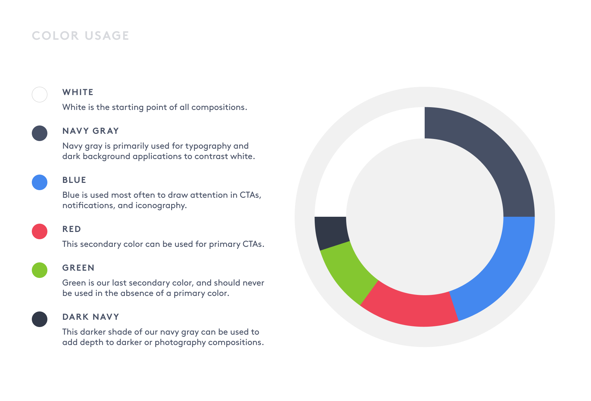
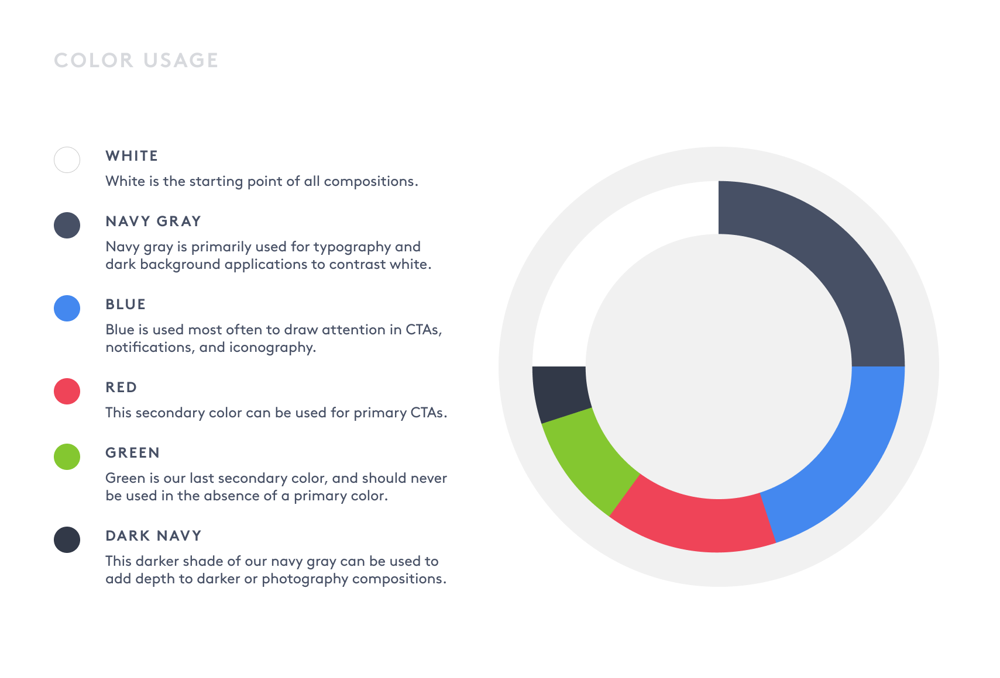

Challenge
The NorthShore hospital network is known for its excellent sports medicine programs. However, overcrowding during the COVID-19 pandemic prevented patients from seeing their physical therapists.
Solution
Our agency took on the challenge of moving these patient-provider interactions into the virtual space. We created an app that would allow anyone to build healthy habits at home, with the guidance of their physical therapist.
 
